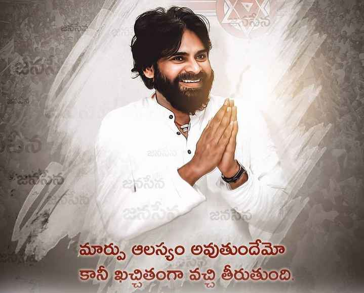

pspk
Pawan Kalyan's actual name is Konidela Kalyan Babu. He began to call himself as Pawan Kalyan when he worked on his first film, Akkada Abbai Ikkada Ammayi, in 1996. He has worked in several critically and commercially successful films and has established himself as one of the leading actors in Telugu cinema. He is also an accomplished choreographer. Pawan Kalyan was born in Chirala, to Sri Venkat Rao and Smt Anjana Devi. He is the youngest brother of actor Chiranjeevi and actor-producer, actor Nagendra Babu. Pawan Kalyan married Renu Desai, an actress who co-starred with him in the movies Badri and Johnny. Renu Desai and Pawan Kalyan have two children: a son named Akira Nandan born in 2004, and a baby girl named Aadhya born in 2010. - IMDb Mini Biography By: Suman Paida Pawan Kalyan launched Jana Sena or Jana Sena Party which is an Indian political party in the states of Andhra Pradesh and Telangana, in March 2014. Jana Sena which means People's Army in Telugu language. On March 10, 2014 he submitted an application for registering the party name. Pawan Kalyan formally launched the party at HICC (Hyderabad International Convention Centre) Madhapur on 14 March 2014. The party has been approved by the election commission on 11 December 2014. - IMDb Mini Biography By: vamsibazaru

pspk
Pawan Kalyan's actual name is Konidela Kalyan Babu. He began to call himself as Pawan Kalyan when he worked on his first film, Akkada Abbai Ikkada Ammayi, in 1996. He has worked in several critically and commercially successful films and has established himself as one of the leading actors in Telugu cinema. He is also an accomplished choreographer. Pawan Kalyan was born in Chirala, to Sri Venkat Rao and Smt Anjana Devi. He is the youngest brother of actor Chiranjeevi and actor-producer, actor Nagendra Babu. Pawan Kalyan married Renu Desai, an actress who co-starred with him in the movies Badri and Johnny. Renu Desai and Pawan Kalyan have two children: a son named Akira Nandan born in 2004, and a baby girl named Aadhya born in 2010. - IMDb Mini Biography By: Suman Paida Pawan Kalyan launched Jana Sena or Jana Sena Party which is an Indian political party in the states of Andhra Pradesh and Telangana, in March 2014. Jana Sena which means People's Army in Telugu language. On March 10, 2014 he submitted an application for registering the party name. Pawan Kalyan formally launched the party at HICC (Hyderabad International Convention Centre) Madhapur on 14 March 2014. The party has been approved by the election commission on 11 December 2014. - IMDb Mini Biography By: vamsibazaru

NTR
Nandamuri Taraka Rama Rao (born May 28, 1923, Nimmakuru, near Machilipatnam, India—died January 18, 1996, Hyderabad) was an Indian motion-picture actor and director, politician, and government official who founded the Telugu Desam Party (TDP) and served three terms (1983–84; 1984–89; and 1994–95) as chief minister (head of government) of Andhra Pradesh state in southeastern India. As an actor he rose to superstardom among the country’s Telugu-speaking people and parlayed his fame into a successful political career. The man who would became popularly known as NTR was born in a small village near the coastal city of Machilipatnam (now in Andhra Pradesh) to a poor farming family. He completed a bachelor’s degree from Andhra Christian College in nearby Guntur. After qualifying for the civil service in what was then the Madras Presidency under British India, he took a job as a sub-registrar at Mangalagiri, northeast of Guntur. He soon left that post, however, to pursue a career in acting. NTR’s first film, Mana Desam, was released in 1949, and he continued to make movies until 1982, appearing in some 300 films and directing more than a dozen. He quickly demonstrated enormous popular appeal and soon attained cult-figure status. He often portrayed a Hindu god, particularly Krishna, in his movies, and his adoption of the white or saffron robes of his costumes as his everyday dress only reinforced his lofty image.